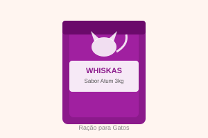

Ração Whiskas Adulto Sabor Atum 3kg

Os gatos simplesmente adoram! Com sabor de atum irresistível, essa ração completa cuida da saúde do seu felino adulto e ainda deixa ele muito satisfeito. Um sucesso garantido na hora da refeição.
Valor: R$ 59,90